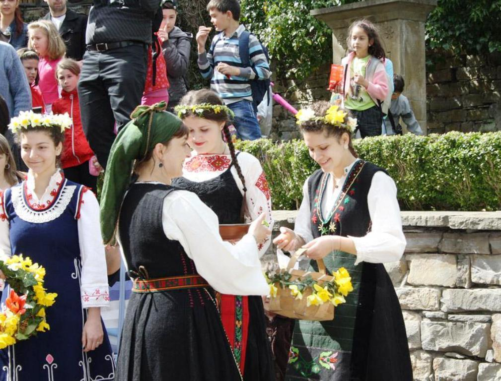

Габрово-Традиции и обичаи
Габровски карнавал
| Габровският карнавал на хумора е карнавал, който се провежда всяка година около 17 май – празника на Габрово, в третата събота на май. В Габрово е наричан Петото годишно време. Карнавалът се провежда от края на XIX век, когато се прави в събота преди Сирни заговезни. Тогава получава името Олелийня. През 1920-те години в Габрово се провеждат и маскени балове. Тези две събития са предшественика на днешния карнавал на хумора, провеждащ се по централните улици на Габрово. Първото карнавално шествие в този си вид е от 1965 г. Провеждането му е преустановено от 1990 до 1997 г. То е подновено през 1998 г. От 2000 г. Габрово е член на Фондацията на европейските карнавални градове. Всяка година карнавалът има свое мото: | ||
|
||
| Всяка година в карнавалното шествие се включват хиляди участници от България и чужбина. Традиционно в шествието се включват и представители на побратимения на Габрово белгийски град Аалст. На няколко места по трасето са разположени коментаторски пунктове, от където зрителите получават повече информация за преминаващите в момента участници. Карнавалът завършва с традиционно отрязване на опашката на котка с огромна ножица от кмета на Габрово. | ||
 |
||
Гергьовден
| Празникът се чества на 6 май, но е официално учреден на 9 януари 1880 г. от княз Александър I Батенберг. Денят на храбростта започва да се чества в Българската армия още с нейното създаване. В нощта срещу празника, преди да пропеят петлите, хората отиват на някоя ливада или поляна, където се търкалят в утринната роса, защото народното вярване твърди, че по това време на годината всичко е „повито с блага роса“, като по-рано търкалянето в росата се е правело на голо. Някъде само ходят боси по росата или си мият лицето и ръцете с нея, другаде и пият роса. Къпането в росата се прави от хората, за да са здрави и да не ги боли кръст през годината. В Габрово се коля ягне за здраве и благодат. |
Лазаровден
| Лазаровден е най-хубавият пролетен празник, в който участват млади, неомъжени моми, които вече са готови да се задомят. Празнува се една седмица преди Великден, в събота. Къде, ако не в автентичната, възрожденска обстановка на Етнографски музей на открито "Етър". Вярва се, че кумицата ще се омъжи първа от лазарките, а на следващата година трябва да научи новите момичета на изпълнените със символика песни и танци, свързани с празника. Лазаруването е важен за ЕМО "Етър" обичай, който се пресъздава всяка година и предизвиква интереса на посетителите. | ||
|  | .jpg "Билки") |
|